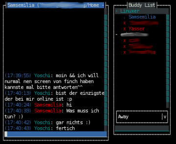
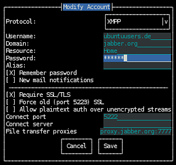

Finch
Dieser Artikel wurde für die folgenden Ubuntu-Versionen getestet:
Ubuntu 14.04 Trusty Tahr
Zum Verständnis dieses Artikels sind folgende Seiten hilfreich:
Finch  ist die Konsolenvariante von Pidgin. Wer bereits Pidgin verwendet und einen Instant Messenger für das Terminal oder die Konsole sucht, wird das Programm schätzen, da Finch auf die selben Einstellungen wie Pidgin zugreift. So werden zum Beispiel die Logdateien in das Log-Verzeichnis von Pidgin (~/.purple/log) gespeichert.
ist die Konsolenvariante von Pidgin. Wer bereits Pidgin verwendet und einen Instant Messenger für das Terminal oder die Konsole sucht, wird das Programm schätzen, da Finch auf die selben Einstellungen wie Pidgin zugreift. So werden zum Beispiel die Logdateien in das Log-Verzeichnis von Pidgin (~/.purple/log) gespeichert.
Unterstützte Protokolle¶
Finch beherrscht alle Protokolle, die Pidgin beherrscht. Das wären:
AOL Instant Messenger (AIM)
Bonjour
Gadu-Gadu
Novell Groupwise
MSN Messenger 
QQ
SILC
Simple
Sametime
Yahoo! Messenger (YIM)
Zephyr
Installation¶
Folgendes Paket muss installiert [1] werden:
finch (universe )
 mit apturl
mit apturl
Paketliste zum Kopieren:
sudo apt-get install finch
sudo aptitude install finch
Einrichten¶
Nach Abschluss der Installation kann man das Programm im Terminal [2] mit
finch
starten.

Einstellungen¶
Einige sinnvolle Erweiterungen, die aktiviert werden sollten:
Offline-Buddys anzeigen¶
Normalerweise werden die Offline-Buddys ausgeblendet. Um dies zu ändern, die Option "Zeige Offline-Buddys" aktivieren.
Gesprächsmitschnitt¶
Um die Gespräche mit den unterschiedlichen Chatpartnern ggf. nochmals nachlesen zu können, empfiehlt es sich bei "Mitschnitt-Format" als Format "einfacher Text" zu wählen und bei Bedarf die Optionen zu setzen, was mitgeschnitten werden sollen. Nun wird im Homeverzeichnis ein Ordner ~/.purple/logs erstellt. Hier findet man alle Protokolle fein säuberlich sortiert nach den Kriterien:
Dienst
benutztes Konto
Gesprächspartner und
Gesprächsmitschnitt
Chatroom¶
Um mit vielen Menschen über das ein oder andere Thema zu sprechen, kann man Chatrooms aufsuchen. In Finch geht man wie folgt vor: "
Alt +
A -> Chaträume". Nun einen Raum, z.B. "ubuntu-de", hineinschreiben und
⏎ verwenden.
Tastenbelegung¶
Die Steuerung ist ganz leicht, da die Tasten leicht zu merken sind und einiges auch über Menüs gesteuert wird.
| Taste/n | Aktion | Taste/n | Aktion |
| Alt + A | Startet ein kleines Menü | Alt + C | Schließt das gerade angezeigte Fenster |
| Alt + P | Wechlse zum vorherigen Fenster | Alt + N | Wechsle zum nächsten Fenster |
| Alt + M | Aktuelles Fenster verschieben | Alt + R | Aktuelles Fenster skalieren |
| Alt + W | Liste aller Fenster anzeigen | Alt + D | Bildschirminhalt als dump.html im HTLM Format speichern |
| Alt + L | Aktualisiere Finch; sollte bei Anzeige von Problemen verwendet werden | Alt + Q | Finch beenden |
| Alt + . | Fenster in der Liste nach rechts verschieben | Alt + | Fenster in der Listen nach Links verschieben |
| Alt + | Fenster 1...10 auswählen | Alt + O | Fenstermenü anzeigen |
| Alt + < | Wechsle zum vorherigen Workspace | Alt + > | Wechsle zum nächsten Workspace |
| Alt + T | Fenster auswählen | Alt + T | Alle ausgewählten Fenster zum aktuellen Workspace verschieben |
| Alt + S | Liste aller Workspaces anzeigen | Alt + / | Show a list of available key-bindings for the current widget in focus. |
| Setze ein Häkchen in den Einstellungen | Esc | u.a. Menüs schließen und Skalier- und Verschiebemodus beenden | |
| F9 | Neuen Workspace erstellen |
Einstellungen zur Tastatur werden in der Datei ~/.gntrc gespeichert. Wer noch mehr zur Tastenbelegung erfahren will, ruft die Manpage der Anwendung auf. Unter Umständen kann es zu Problemen mit den Tastenkürzeln kommen, falls die verwendete Desktop-Umgebung diese ebenfalls nutzt. Beim Einsatz auf der Konsole tritt dieses Problem im Regelfall nicht auf.


- Erstellt mit Inyoka
-
 2004 – 2017 ubuntuusers.de • Einige Rechte vorbehalten
2004 – 2017 ubuntuusers.de • Einige Rechte vorbehalten
Lizenz • Kontakt • Datenschutz • Impressum • Serverstatus -
Serverhousing gespendet von